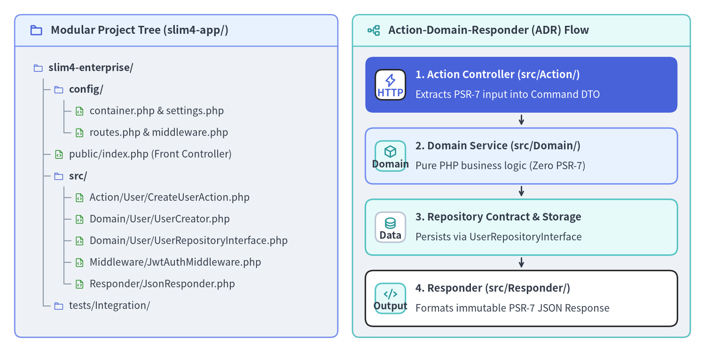
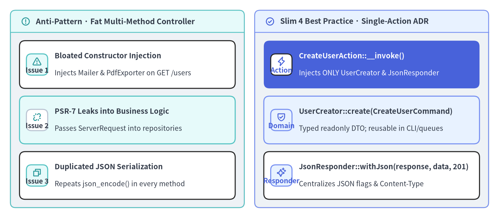

Modular Design & Action Controllers
While anonymous route closures inside public/index.php are ideal for prototypes, production Slim 4 (v4.15.3) applications scale by separating configuration, HTTP transport, business logic, and persistence into explicit layers. By combining a modular directory structure (config/, public/, src/Action/, src/Domain/, src/Middleware/, src/Responder/) with the Action-Domain-Responder (ADR) pattern and Single-Action Controllers, your application remains fast to boot, easy to test in isolation, and completely decoupled from framework state.

Source Code
from drawlib.canvas import save, setup
from drawlib.icons import phosphor
from drawlib.preset_colors import CssColors
from drawlib.smartarts import CardList, Panel, TreeNode
from drawlib.styles import Colors, Styles
setup(width=192, height=96, dpi=150)
p_left = Panel(
"Modular Project Tree (slim4-app/)",
style=Styles.Neutral.patch(shape_r=2.0),
header_style=Styles.PrimaryNeutral.patch(shape_line_width=1.2),
text_style=Styles.DarkBold.patch(text_size=11.0),
icon=phosphor.folder,
icon_style=Styles.PrimaryBold,
header_variant="filled",
header_height=8.5,
)
p_left.draw((4.0, 4.0), width=88.0, height=88.0)
TreeNode.register_drawing_item(
name="dir_icon",
location="before",
padding_width=4.2,
function=phosphor.folder,
style=Styles.Primary.patch(icon_color=Colors.Primary),
args={"width": 3.0},
)
TreeNode.register_drawing_item(
name="php_icon",
location="before",
padding_width=4.2,
function=phosphor.file_code,
style=Styles.Primary.patch(icon_color=CssColors.ForestGreen),
args={"width": 3.0},
)
tree_root = TreeNode(
"slim4-enterprise/",
text_style=Styles.DarkBold.patch(text_size=10.2),
line_style=Styles.Muted.patch(line_width=1.0),
line_horizontal_margin=2.8,
line_horizontal_length=2.8,
line_vertical_margin=5.9,
children=[
TreeNode(
"config/",
children=[
TreeNode("container.php & settings.php", text_style=Styles.Dark.patch(text_size=10.0)).set_drawing_item("php_icon"),
TreeNode("routes.php & middleware.php", text_style=Styles.Dark.patch(text_size=10.0)).set_drawing_item("php_icon"),
],
).set_drawing_item("dir_icon"),
TreeNode(
"public/index.php (Front Controller)",
text_style=Styles.Dark.patch(text_size=10.0),
).set_drawing_item("php_icon"),
TreeNode(
"src/",
children=[
TreeNode("Action/User/CreateUserAction.php", text_style=Styles.Dark.patch(text_size=10.0)).set_drawing_item("php_icon"),
TreeNode("Domain/User/UserCreator.php", text_style=Styles.Dark.patch(text_size=10.0)).set_drawing_item("php_icon"),
TreeNode("Domain/User/UserRepositoryInterface.php", text_style=Styles.Dark.patch(text_size=10.0)).set_drawing_item("php_icon"),
TreeNode("Middleware/JwtAuthMiddleware.php", text_style=Styles.Dark.patch(text_size=10.0)).set_drawing_item("php_icon"),
TreeNode("Responder/JsonResponder.php", text_style=Styles.Dark.patch(text_size=10.0)).set_drawing_item("php_icon"),
],
).set_drawing_item("dir_icon"),
TreeNode("tests/Integration/", text_style=Styles.Dark.patch(text_size=10.0)).set_drawing_item("dir_icon"),
],
).set_drawing_item("dir_icon")
tree_root.draw(xy=(9.0, 77.5))
p_right = Panel(
"Action-Domain-Responder (ADR) Flow",
style=Styles.Neutral.patch(shape_r=2.0),
header_style=Styles.SecondaryNeutral.patch(shape_line_width=1.2),
text_style=Styles.DarkBold.patch(text_size=11.0),
icon=phosphor.tree_structure,
icon_style=Styles.SecondaryBold,
header_variant="filled",
header_height=8.5,
)
p_right.draw((96.0, 4.0), width=92.0, height=88.0)
rx, rw, rh = p_right.get_content_box((96.0, 4.0), width=92.0, height=88.0, padding=(3.5, 3.0))
cl_right = CardList(
style=Styles.White,
text_style=Styles.DarkBold.patch(text_size=10.5),
description_style=Styles.Dark.patch(text_size=10.0),
badge_shape="rounded_rect",
badge_style=Styles.SecondaryNeutral,
badge_text_style=Styles.DarkBold.patch(text_size=10.0),
icon_style=Styles.SecondaryBold,
direction="vertical",
spacing=2.8,
show_arrows=True,
arrow_style=Styles.DarkBold.patch(line_arrow_head_scale=10, line_width=1.4),
)
cl_right.add(
"1. Action Controller (src/Action/)",
"Extracts PSR-7 input into Command DTO",
badge_text="HTTP",
icon=phosphor.lightning,
style=Styles.PrimaryFlat,
text_style=Styles.WhiteBold.patch(text_size=10.5),
description_style=Styles.White.patch(text_size=10.0),
badge_style=Styles.White,
badge_text_style=Styles.PrimaryBold.patch(text_size=10.0),
icon_style=Styles.PrimaryBold,
)
cl_right.add(
"2. Domain Service (src/Domain/)",
"Pure PHP business logic (Zero PSR-7)",
badge_text="Domain",
icon=phosphor.cube,
style=Styles.PrimaryNeutral,
)
cl_right.add(
"3. Repository Contract & Storage",
"Persists via UserRepositoryInterface",
badge_text="Data",
icon=phosphor.database,
style=Styles.SecondaryNeutral,
badge_style=Styles.White.patch(shape_line_color=Colors.Gray4),
badge_text_style=Styles.DarkBold.patch(text_size=10.0),
)
cl_right.add(
"4. Responder (src/Responder/)",
"Formats immutable PSR-7 JSON Response",
badge_text="Output",
icon=phosphor.code,
)
cl_right.draw(xy=rx, width=rw, height=rh)
save()
Production Directory Structure & Configuration Split
In a modular Slim 4 codebase, public/index.php never defines routes or container bindings directly. Instead, config/ holds composable PHP files that return typed configuration closures (callable(App): void or array<string, mixed>), while src/ isolates HTTP handlers from domain logic:
| Path / Module | Responsibility | Allowed Dependencies |
|---|---|---|
public/index.php |
SAPI entrypoint that boots the container and calls $app->run() |
config/bootstrap.php |
config/settings.php |
Centralizes environment variables into a typed AppSettings object |
Standard PHP types & environment readers |
config/container.php |
PSR-11 container definitions (App::class, interfaces, LoggerInterface) |
Psr\Container\ContainerInterface, Slim\Factory\AppFactory |
config/middleware.php |
Registers global PSR-15 middlewares and the Middleware Triad | Slim\App, src/Middleware/* |
config/routes.php |
Registers route groups and maps URI patterns to src/Action/* classes |
Slim\App, Slim\Routing\RouteCollectorProxy, src/Action/* |
src/Action/ |
Single-Action Controllers (__invoke or RequestHandlerInterface) |
PSR-7, src/Domain/* services/DTOs, src/Responder/* |
src/Domain/ |
Domain Services, Value Objects, DTOs, and Repository Interfaces | Pure PHP only (No Psr\Http\* or Slim\* imports) |
src/Responder/ |
Reusable PSR-7 response formatters (JsonResponder) |
Psr\Http\Message\ResponseFactoryInterface, ResponseInterface |
By returning anonymous functions (static function (App $app): void) from config/routes.php and config/middleware.php, both your public/index.php front controller and your PHPUnit integration test suite can boot the exact same Slim\App instance without duplicating setup code:
<?php
declare(strict_types=1);
// File: config/routes.php
use App\Action\Health\HealthCheckAction;
use App\Action\User\CreateUserAction;
use App\Action\User\GetUserAction;
use App\Middleware\JwtAuthMiddleware;
use Slim\App;
use Slim\Routing\RouteCollectorProxy;
return static function (App $app): void {
$app->get('/health', HealthCheckAction::class)->setName('health.check');
$app->group('/api/v1', function (RouteCollectorProxy $v1): void {
$v1->post('/users', CreateUserAction::class)->setName('users.create');
$v1->get('/users/{id:[0-9]+}', GetUserAction::class)->setName('users.get');
})->add(JwtAuthMiddleware::class);
};
And config/middleware.php registers custom cross-cutting middlewares alongside Slim's built-in triad in deterministic LIFO order:
<?php
declare(strict_types=1);
// File: config/middleware.php
use App\Support\AppSettings;
use Psr\Log\LoggerInterface;
use Slim\App;
return static function (App $app): void {
$container = $app->getContainer();
$settings = $container?->get(AppSettings::class);
$logger = $container?->get(LoggerInterface::class);
// 1. Inner: Parse JSON, form-urlencoded, and XML payloads
$app->addBodyParsingMiddleware();
// 2. Middle: Compute FastRoute match and populate RouteContext
$app->addRoutingMiddleware();
// 3. Outermost (Added LAST -> Runs FIRST): Catch all Throwable exceptions
$app->addErrorMiddleware(
displayErrorDetails: $settings ? $settings->displayErrorDetails : false,
logErrors: $settings ? $settings->logErrors : true,
logErrorDetails: $settings ? $settings->logErrorDetails : true,
logger: $logger
);
};
Action-Domain-Responder (ADR) & Single-Action Controllers
Traditional MVC frameworks encourage grouping index(), show(), store(), update(), and destroy() into a single UserController class. Over time, that controller accumulates a bloated constructor injecting 8–10 services, even though any single HTTP request only executes one method and uses one or two of those dependencies.
In Slim 4, the idiomatic pattern is the Single-Action Controller (part of the Action-Domain-Responder pattern): each HTTP endpoint maps to its own dedicated, final readonly class with a single __invoke() (or handle()) entry point.

Source Code
from drawlib.canvas import save, setup
from drawlib.icons import phosphor
from drawlib.smartarts import CardList, Panel
from drawlib.styles import Colors, Styles
setup(width=192, height=84, dpi=150)
p_left = Panel(
"Anti-Pattern · Fat Multi-Method Controller",
style=Styles.Neutral.patch(shape_r=2.0),
header_style=Styles.SecondaryNeutral.patch(shape_line_width=1.2),
text_style=Styles.DarkBold.patch(text_size=11.0),
icon=phosphor.warning_circle,
icon_style=Styles.SecondaryBold,
header_variant="filled",
header_height=8.5,
)
p_left.draw((4.0, 4.0), width=90.0, height=76.0)
lx, lw, lh = p_left.get_content_box((4.0, 4.0), width=90.0, height=76.0, padding=(3.5, 3.2))
cl_left = CardList(
style=Styles.White,
text_style=Styles.DarkBold.patch(text_size=10.5),
description_style=Styles.Dark.patch(text_size=10.0),
badge_shape="rounded_rect",
badge_style=Styles.SecondaryNeutral,
badge_text_style=Styles.DarkBold.patch(text_size=10.0),
icon_style=Styles.SecondaryBold,
direction="vertical",
spacing=3.0,
)
cl_left.add(
"Bloated Constructor Injection",
"Injects Mailer & PdfExporter on GET /users",
badge_text="Issue 1",
icon=phosphor.warning,
)
cl_left.add(
"PSR-7 Leaks into Business Logic",
"Passes ServerRequest into repositories",
badge_text="Issue 2",
icon=phosphor.link_break,
style=Styles.SecondaryNeutral,
badge_style=Styles.White.patch(shape_line_color=Colors.Gray4),
badge_text_style=Styles.DarkBold.patch(text_size=10.0),
)
cl_left.add(
"Duplicated JSON Serialization",
"Repeats json_encode() in every method",
badge_text="Issue 3",
icon=phosphor.copy,
)
cl_left.draw(xy=lx, width=lw, height=lh)
p_right = Panel(
"Slim 4 Best Practice · Single-Action ADR",
style=Styles.Neutral.patch(shape_r=2.0),
header_style=Styles.PrimaryNeutral.patch(shape_line_width=1.2),
text_style=Styles.DarkBold.patch(text_size=11.0),
icon=phosphor.check_circle,
icon_style=Styles.PrimaryBold,
header_variant="filled",
header_height=8.5,
)
p_right.draw((98.0, 4.0), width=90.0, height=76.0)
rx, rw, rh = p_right.get_content_box((98.0, 4.0), width=90.0, height=76.0, padding=(3.5, 3.2))
cl_right = CardList(
style=Styles.White,
text_style=Styles.DarkBold.patch(text_size=10.5),
description_style=Styles.Dark.patch(text_size=10.0),
badge_shape="rounded_rect",
badge_style=Styles.PrimaryNeutral,
badge_text_style=Styles.PrimaryBold.patch(text_size=10.0),
icon_style=Styles.PrimaryBold,
direction="vertical",
spacing=3.0,
)
cl_right.add(
"CreateUserAction::__invoke()",
"Injects ONLY UserCreator & JsonResponder",
badge_text="Action",
icon=phosphor.lightning,
style=Styles.PrimaryFlat,
text_style=Styles.WhiteBold.patch(text_size=10.5),
description_style=Styles.White.patch(text_size=10.0),
badge_style=Styles.White,
badge_text_style=Styles.PrimaryBold.patch(text_size=10.0),
icon_style=Styles.PrimaryBold,
)
cl_right.add(
"UserCreator::create(CreateUserCommand)",
"Typed readonly DTO; reusable in CLI/queues",
badge_text="Domain",
icon=phosphor.shield_check,
style=Styles.PrimaryNeutral,
)
cl_right.add(
"JsonResponder::withJson(response, data, 201)",
"Centralizes JSON flags & Content-Type",
badge_text="Responder",
icon=phosphor.sparkle,
)
cl_right.draw(xy=rx, width=rw, height=lh)
save()
Implementing an Invokable Action Controller
When you register $v1->post('/users', CreateUserAction::class), Slim\CallableResolver resolves CreateUserAction from the PSR-11 container and invokes its __invoke(ServerRequestInterface $request, ResponseInterface $response, array $args): ResponseInterface method via the active route invocation strategy (RequestResponse by default).
The Action controller performs three concise steps—extracting HTTP input into a typed command, invoking the Domain service, and delegating serialization to a JsonResponder:
<?php
declare(strict_types=1);
namespace App\Action\User;
use App\Domain\User\CreateUserCommand;
use App\Domain\User\UserCreator;
use App\Responder\JsonResponder;
use Psr\Http\Message\ResponseInterface as Response;
use Psr\Http\Message\ServerRequestInterface as Request;
final readonly class CreateUserAction
{
public function __construct(
private UserCreator $userCreator,
private JsonResponder $responder,
) {
}
/**
* @param array<string, string> $args
*/
public function __invoke(Request $request, Response $response, array $args = []): Response
{
$body = (array) $request->getParsedBody();
$command = new CreateUserCommand(
email: (string) ($body['email'] ?? ''),
displayName: (string) ($body['display_name'] ?? ''),
);
$user = $this->userCreator->create($command);
return $this->responder->withJson($response, [
'id' => $user->id,
'email' => $user->email,
'display_name' => $user->displayName,
], 201);
}
}
Extracting response serialization into a shared JsonResponder guarantees consistent JSON_THROW_ON_ERROR | JSON_UNESCAPED_SLASHES | JSON_UNESCAPED_UNICODE flags and Content-Type: application/json headers across every endpoint:
<?php
declare(strict_types=1);
namespace App\Responder;
use Psr\Http\Message\ResponseInterface;
final readonly class JsonResponder
{
/**
* @param array<string, mixed> $data
*/
public function withJson(
ResponseInterface $response,
array $data,
int $status = 200
): ResponseInterface {
$payload = json_encode(
$data,
JSON_THROW_ON_ERROR | JSON_UNESCAPED_SLASHES | JSON_UNESCAPED_UNICODE
);
$response->getBody()->write($payload);
return $response
->withStatus($status)
->withHeader('Content-Type', 'application/json; charset=utf-8');
}
}
Implementing PSR-15 RequestHandlerInterface Actions
In addition to __invoke(Request, Response, array $args), Slim's CallableResolver::resolveRoute() (Slim/CallableResolver.php:68-113) natively checks $toResolve instanceof RequestHandlerInterface and binds [$instance, 'handle']. When paired with Slim's built-in RequestHandler invocation strategy (new RequestHandler(true)), your Action controllers can implement standard PSR-15 RequestHandlerInterface directly:
<?php
declare(strict_types=1);
namespace App\Action\User;
use App\Domain\User\UserReader;
use App\Responder\JsonResponder;
use Psr\Http\Message\ResponseFactoryInterface;
use Psr\Http\Message\ResponseInterface;
use Psr\Http\Message\ServerRequestInterface;
use Psr\Http\Server\RequestHandlerInterface;
final readonly class GetUserAction implements RequestHandlerInterface
{
public function __construct(
private UserReader $userReader,
private ResponseFactoryInterface $responseFactory,
private JsonResponder $responder,
) {
}
public function handle(ServerRequestInterface $request): ResponseInterface
{
// When RequestHandler(appendRouteArgumentsToRequestAttributes: true) is active,
// FastRoute URL parameters are attached as PSR-7 request attributes
$userId = (int) $request->getAttribute('id', 0);
$user = $this->userReader->getById($userId);
$response = $this->responseFactory->createResponse();
return $this->responder->withJson($response, [
'id' => $user->id,
'email' => $user->email,
'display_name' => $user->displayName,
]);
}
}
Decoupling Domain Services & Typed Configuration Objects
Two architectural boundaries keep enterprise Slim 4 codebases maintainable as they grow to hundreds of endpoints:
- Keep PSR-7 Out of
src/Domain/: Never passServerRequestInterfaceinto a Domain Service or Repository. Instead, pass immutablereadonlyDTOs (CreateUserCommand) and return typed Domain objects (UserResult). BecauseUserCreatordepends only onUserRepositoryInterface, you can unit-test business rules in milliseconds without constructing HTTP requests, and call the exact same service from a Symfony Console CLI command or an async queue consumer. - Replace Scattered
$_ENVReads with TypedAppSettings: Reading$_ENV['APP_DEBUG']orgetenv('DB_DSN')directly inside controllers makes configuration impossible to mock in tests and prone to type coercion bugs. Define a singlereadonly class AppSettingspopulated inconfig/settings.phpand inject it via your PSR-11 container:
<?php
declare(strict_types=1);
namespace App\Domain\User;
use DomainException;
final readonly class CreateUserCommand
{
public function __construct(
public string $email,
public string $displayName,
) {
}
}
final readonly class UserCreator
{
public function __construct(
private UserRepositoryInterface $users,
) {
}
public function create(CreateUserCommand $command): UserEntity
{
if (!filter_var($command->email, FILTER_VALIDATE_EMAIL)) {
throw new DomainException('A valid email address is required.');
}
return $this->users->insert($command->email, trim($command->displayName));
}
}
And encapsulate environment variables inside an immutable AppSettings value object:
<?php
declare(strict_types=1);
namespace App\Support;
final readonly class AppSettings
{
public function __construct(
public string $appEnv,
public bool $displayErrorDetails,
public bool $logErrors,
public bool $logErrorDetails,
public ?string $routeCacheFile,
public string $dbDsn,
) {
}
public static function fromEnv(array $env): self
{
$isProd = ($env['APP_ENV'] ?? 'production') === 'production';
return new self(
appEnv: (string) ($env['APP_ENV'] ?? 'production'),
displayErrorDetails: !$isProd,
logErrors: true,
logErrorDetails: true,
routeCacheFile: $isProd ? __DIR__ . '/../../var/cache/routes.php' : null,
dbDsn: (string) ($env['DB_DSN'] ?? 'sqlite::memory:'),
);
}
}
Next, continue to PSR-11 DI & Callable Resolution to see how PHP-DI, AppFactory::createFromContainer(), Slim\CallableResolver, and deferred middleware resolution wire these modular layers together automatically. You can also review Quickstart & Middleware Triad, explore FastRoute Patterns, Groups & Caching, or inspect internal class contracts in the Slim 4 API Reference and Slim 4 Internal Architecture.